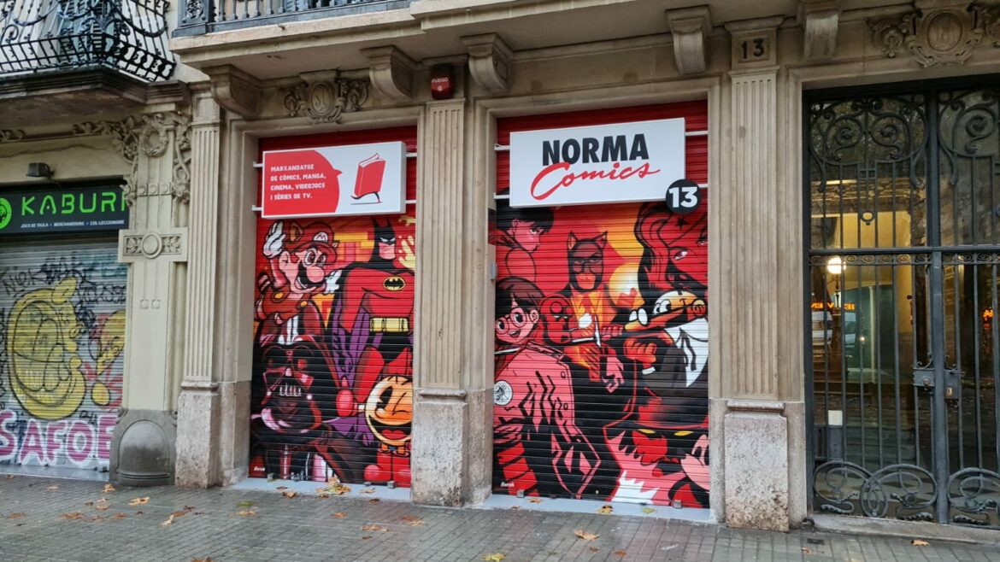
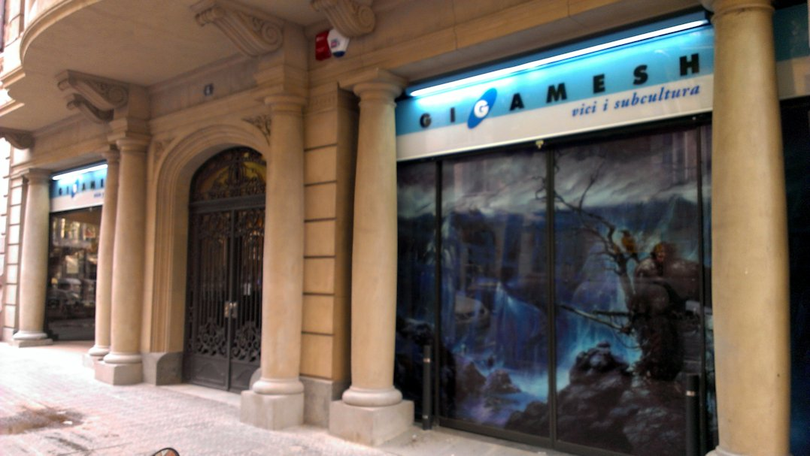
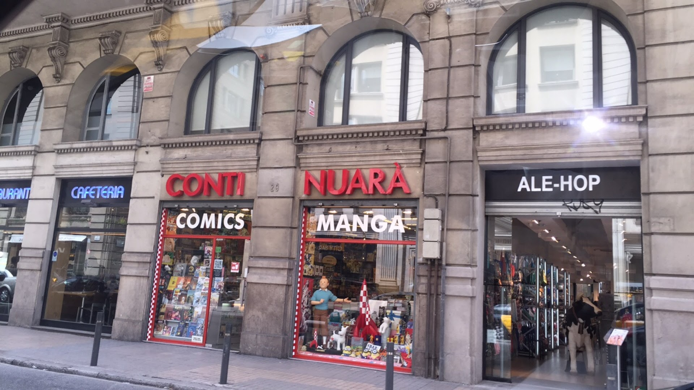

Calle Bailén
Norma Cómics
Kaburi
Calle Ali Bei y Arco de Triunfo
Fnac Triangle
El Born y Passeig de Sant Joan
Continuará Cómics
El Born
El "Triángulo Friki" de Barcelona es un punto de encuentro icónico en el corazón de la ciudad, conocido y valorado por los amantes de la cultura geek, el anime, la ciencia ficción y la fantasía. Este peculiar “triángulo” se extiende por el barrio del Born y alrededor del Arco de Triunfo, y es famoso por reunir tiendas especializadas que han logrado construir una comunidad de fans de todas las edades y nacionalidades. Aquí, los visitantes pueden encontrar una amplia variedad de productos: desde cómics y manga hasta juegos de rol, videojuegos retro y actuales, figuras de colección, merchandising de sus sagas favoritas y una enorme oferta de actividades y eventos que celebran esta cultura alternativa.

El "Triángulo Friki" comenzó a formarse en los años 80 y 90, cuando pequeñas tiendas de cómics y juegos de rol empezaron a abrir en la zona. En esa época, la cultura geek aún era considerada un nicho, y los fans de cómics, ciencia ficción y fantasía tenían pocos lugares donde encontrar productos de sus aficiones en España. A medida que estos intereses se hicieron más populares y aceptados, algunas de estas tiendas comenzaron a ganar renombre y a expandirse.
La calle Bailén, la calle Ali Bei y el Passeig de Sant Joan se convirtieron en un epicentro para los fans de lo “friki” en Barcelona, con tiendas que se especializaban en artículos importados difíciles de encontrar, mangas en edición original y juegos de rol que en esa época apenas se distribuían. La zona también se benefició de eventos como el Salón del Cómic de Barcelona y el Salón del Manga, los cuales atrajeron a fans de todo el país y consolidaron al "Triángulo Friki" como un destino para los seguidores de la cultura pop y geek.
Hoy en día, el Triángulo Friki es mucho más que un lugar para ir de compras. Es un espacio donde los fans de todas las edades pueden reunirse, compartir su pasión y sentirse parte de una comunidad. Muchos de los negocios en esta área organizan eventos, torneos de videojuegos, presentaciones de cómics y sesiones de firmas con autores y artistas. Las tiendas de esta zona no solo venden productos, sino que también funcionan como espacios de encuentro donde los fans pueden conectar con otros que comparten sus mismos intereses. Este "triángulo" es un reflejo de la diversidad y la riqueza cultural de Barcelona, y a lo largo de los años se ha convertido en un referente dentro y fuera de España. Para cualquier fan del manga, el anime, la ciencia ficción o la fantasía que visite la ciudad, el Triángulo Friki es una parada obligatoria que ofrece una experiencia única y auténtica.
Norma Cómics
Kaburi
Fnac Triangle
Continuará Cómics
El Born
Aquí puedes encontrar eventos como presentaciones de libros, firmas de autores y otras actividades relacionadas con la cultura geek y el Triángulo Friki.